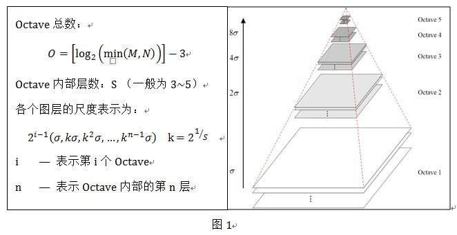
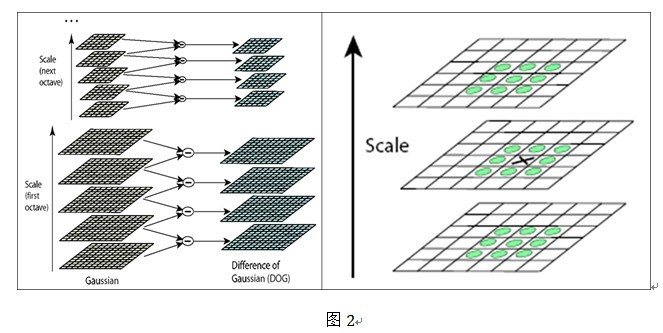

Objective-C的数据类型可以分为：基本数据类型，对象类型和id类型。
字符串创建方式：
NSString *firstString = [[NSString alloc] initWithCString:"Hello World!" encoding:NSUTF8StringEncoding];
NSString *secondString = [NSString stringWithCString:"Hello World!" encoding:NSUTF8StringEncoding];
NSString *thirdString = @"Hello World!";
NSString是不可变的，也就是说她的字符串的内容在创建时就设定好了，之后无法改变。如果要表示另一个字符串，必须按如下方式创建一个新的字符串变量：
NSString *name = @"John";
name = [name stringByAppendingString:@"ny"];
时间观念做一个守时的人，严格的时间观念
尊重队友、对手和面试官
表现真正的自己
本文是LDA学习笔记系列文章的第5部分，主要介绍LDA在图像分类中的应用。
图像处理问题的第一步是特征提取，本文介绍的特征提取算法是SIFT(Scale-Invariant Feature Transform)，该算法最早于1999年由David G. Lowe提出，2004年他在论文“Distinctive image features from scale-invariant keypoints”中对其加以发展和完善。通过SIFT算法可以将图像表示成一个特征的集合，然而这样的特征集合中的特征值都是不同的，为了能把图像表示成BOF(Bag of Feature)，我们可以通过聚类算法将相近的特征表示为同一个特征，常用的聚类算法如：K-Means。至此，我们就可以统计每幅图片中各个特征出现的频率，获得特征的频率数据后就可以训练获得LDA模型。
SIFT算法分析
相关概念
- 关键点 就是在不同尺度空间的图像下检测出的具有方向信息的局部极值点。
- 尺度空间 通过对原始图像进行尺度变换，获得图像在多尺度下的尺度空间表示序列，对这些序列进行尺度空间主轮廓提取，并以该主轮廓为一种特征向量，实现边缘、角点检测和不同分辨率上的特征提取。尺度越大图像越模糊。实际上，在尺度空间理论中，是通过对图像进行模糊来模拟多尺度下的图像。直观上，图像的模糊程度逐渐增大，模拟了人在距离目标由近到远时目标在视网膜上的成像过程。
-
高斯卷积 图像的尺寸是自然存在的，而不是人为创造的。高斯核是唯一可以产生多尺度空间的线性核，一个图像的尺度空间L(x, y,σ) 定义为原始图像I(x, y)与一个可变尺度的2维高斯函数G(x, y,σ)的卷积运算。σ表示尺度。
-
高斯金字塔 构建高斯金字塔分为两步：1）对图像做高斯平滑2）对图像做降采样（图像长宽各减半，总的大小变为原始图像的1/4）。一幅原始图像可以产生几组（Octave）图像，一组图像内部又包括几层（Interval）图像，为了让尺度体现连续性，相邻两层图像的尺度为K倍关系，同时相邻两组的同一层尺度为2倍关系，如下图1所示：

关键点检测
-
LoG算子 Laplacian过滤器可以用于边缘检测，但是它对噪声数据非常敏感，所以一般先对图像进行一个平滑处理，常用高斯过滤器，这两步一起叫做LoG（Laplacian of Gaussian）算子
-
DoG算子 通过推导可以看出，LoG算子与高斯核含函的差有直接关系，由此引入一种新的算子DoG（Difference of Gaussians），即高斯差分算子
-
DoG金字塔 可以看出，LoG算子和DoG算子相差常数系数，而这并不会改变极值点的位置。因此我们在DoG算子中求得的极值点就是LoG算子的极值点，也正是我们需要的关键点。DoG在计算上只需相邻尺度的图像想减，因此简化了计算。对应DoG算子，我们要构建DoG金字塔，如图2左侧所示。

关键点是由DoG空间的局部极值点组成的，为了寻找DoG的极值点，每个像素点要和它所有的相邻点比较，相邻点包括了同尺度空间的8个相邻点，以及上下相邻尺度对应的2*9个点，共26个像素点，如图2右侧所示。在极值比较的过程中，每一组（Octave）图像的首末两层是无法进行极值比较的，为了满足尺度变化的连续性，我们在每一组图像的顶层继续用高斯模糊生成了3幅图像，因此高斯金字塔有每组S+3层图像，DOG金字塔每组有S+2层图像。
K-Means聚类
参考资料
- Simultaneous Image Classification and Annotation
- 基于SIFT+Kmeans+LDA的图片分类器的实现
- SIFT原理与源码分析(OpenCV):DoG尺度空间构造
- SIFT特征提取分析
- EM与弹性布局
em作为单位时，元素大小不是固定的。假设标签<p>的父标签为<div>，且定义了font-size为16px，若<p>标签的font-size为2em，则<p>标签内文字的实际大小为16*2=32px
- CSS选择器
常用命令
- source
source命令也称为“点命令”，也就是一个点符号（.）。source命令通常用于重新执行刚修改的初始化文件，使之立即生效，而不必注销并重新登录。用法如下：
source filename [arguments]
- which
which指令会在环境变量$PATH设置的目录里查找符合条件的文件。用法如下：
which [-as] program ...
Awk编程笔记
1. 读取文件的指定行的指定字段
awk 'NR==n {print $k}' path/filename
n,k正整数，分别表示记录的行号和字段号。若要用变量表示行号，则需要用单引号将变量引起来
awk 'NR==5,NR=8 {print $0}' path/filename
打印第5行和第8行的记录
awk 'NR%10==5 {print $0}' path/filename
打印行号除以10后余数为5的行的记录
2. 将awk命令的输出传递给其它变量
text=${awk '{print $0}' path/filename}
Sed编程笔记
参考资料
- awk学习笔记 - Jims of 肥肥世家
- sed学习笔记 - Jims of 肥肥世家
^